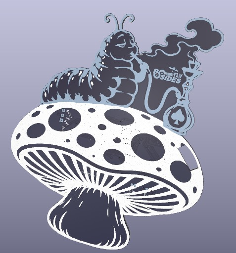
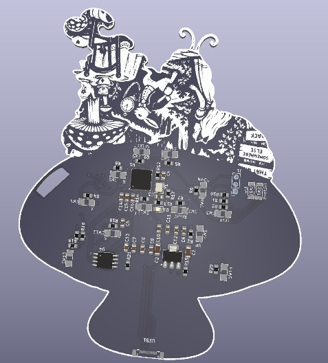

ALICE
BSidesTLV 2026 · the badge and its challengeALICE INAI LANDALICE INAI LANDALICE INAI LAND
a badge·a controller·a key·a glitching tool
- RP2040 · 14 buttons · USB-C
- enumerates as a wired DualShock 4
- so an iPhone binds it, and the site knows it by name
Nothing on the site plays from a keyboard
Connect over WebHID, or hold SELECT + Y and the badge spells its vault on the stick axes - any browser, phones included
One player for every level
the two stages, the community's rooms, a room from a link - the par of each worked out on your device
A lesson that follows the player, and thirteen prizes
progress lives on the device: the same room shared, shelved or merged is one level
Solve runs the real solver in the browser
106 moves for A Mad Tea Party; the published site keeps the solver for the verifier, not the player
Fault injection and side channels, trained on the badge
a tune inside a window · a pulse that skips the check · a door that leaks how much you had right · a watchdog's window · a stack to smash
The page reads it as a wired DualShock 4
the d-pad moves Alice, Y waits, B takes a move back, START restarts; the lesson line follows, and a prize when the door opens
as it does it
the back of the board, the stalk up into the phone: drawn from the PCB itself
every press lights the key here as it lands on the page above; held upside down, the page turns and the buttons swap with it
Paint a room with the game's own tiles
a grid editor on a local checkout: brushes, mirror, undo, overlays, a seeded generator, a shelf - and a glitch level for any of the five ranges
The real solver says: the par, a load-bearing gate, a difficulty word
then the room plays on a simulated badge that lights from the keyboard, a click or a badge on USB
Your assistant opens the pull request, or follows the White Rabbit with you
three ways to a first room: Follow the White Rabbit · Drink Me · Eat Me - Claude Code, Codex, Cursor, Gemini, Copilot, Hermes


WebUSB to the RP2040's bootloader, nothing to install
BootSel while the plug goes in, or SELECT + START for two seconds; the deploy's own build, read back before the reboot
ALICE IN AI LAND
bsidestlv.github.io/bsidestlv-2026-badge